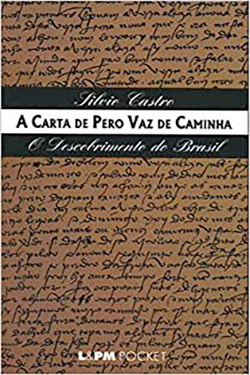

A carta de Pero Vaz de Caminha - Silvio Castro
Sobre o livro:
O texto completo da Carta de Pero Vaz de Caminha, com o comentário do Professor Silvio Castro, um dos maiores estudiosos do assunto no Brasil. Segundo Silvio Castro, a revelação do Brasil pela Carta de Pero Vaz de Caminha cria todo um roteiro de magia para a nova terra. As palavras do escrivão português revelam como que um futuro incondicional para a realidade brasileira. Uma terra paradisíaca, oferecendo a melhor qualidade de vida e horizontes belíssimos, cheios de tranqüilidade. O homem, através das palavras de Pero Vaz, toma conhecimento da tão desejada novidade - a existência de um novo mundo. Mas logo depois o espírito da palavra do poeta português começa a se perder. Para a conservação das riquezas ameaçadas, os portugueses mudam de número e de natureza. Já não mais a serena amorável relação. Mas a tomada do poder. O paraíso se modifica lentamente. O claro imediato sentido da existência se vê superado pela convicção colonizadora e imperialista, fazendo o colonizador perder sua visão do paraíso.
Imagens:
Onde Encontrar?
Estante 06, Prateleira 03, Seção História
Código do Livro
625
Outras informações:
- Número de páginas: 127;
- Autor: Silvio Castro;
- Editora:L&PM